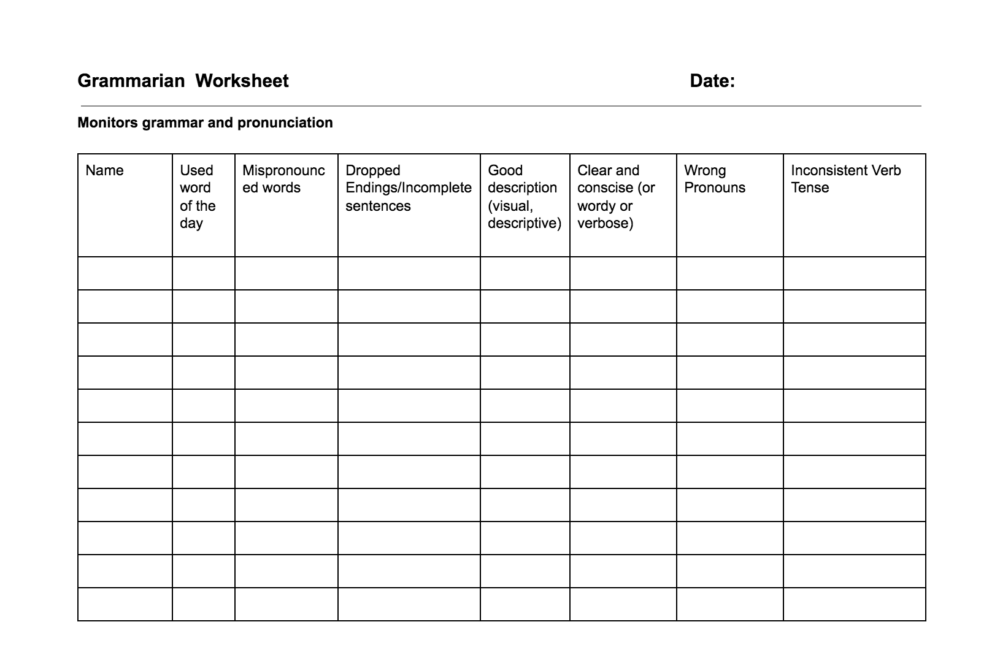

<!-- Main -->
	<div id="main" class="wrapper style1">
		<div class="container">
			<section>
				<p align="center"></p>
				<div class="10u -1u">
					<header class="major">
						<!-- <h2>Blog</h2> -->
						<!-- <span class="byline">Integer sit amet pede vel arcu aliquet pretium</span> -->
					</header>
					<h2>Summary of the Role</h2>
					<ul>
						<li>1. The Grammarian helps club members improve their grammar and vocabulary. </li>
						<li>2. The Grammarian sends the word of the day to the <a href="mailto:annlee2018@u.northwestern.edu">VP Education</a> at least a day in advance.</li>
						<li>3. During the meeting, explain your role to the group.</li>
						<li>4. Announce the word of the day and read the sentences aloud, the 1st one alone and the 2nd sentence with the audience.</li>
						<li>5. Write down the language and grammar usage of all speakers, noting incomplete sentences, mispronunciation, grammatical mistakes, non-sequiturs, malapropisms, etc</li>
						<li>6. Keep track of who says the word of the day and how many times.</li>
						<li>7. Gives a report on the grammar at the end of the meeting. </li><br>
						<li>If you have any questions, feel free to contact the <a href="mailto:arindam.paul@eecs.northwestern.edu">VP Education</a>.</li>
</ul><br>
<h2>Evaluation form</h2>
Download: <a href="grammarian.pdf"></a>
	
	<br>

<a href="https://www.toastmasters.org/Membership/Club-Meeting-Roles/Grammarian"><h2>Resource from Toastmasters International</h2></a>


				</div>
			</section>
		</div>
	</div>
